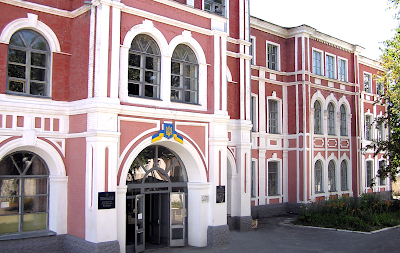

 Полтавський політехнічний коледж – один з найпрестижніших вищих навчальний закладів І-ІІ рівнів акредитації Полтавської області. Коледж акредитований як заклад вищої освіти І рівня акредитації, який надає освітні послуги за спеціальностями: «Розробка програмного забезпечення», «Обслуговування комп'ютерних систем і мереж», «Монтаж і експлуатація електроустаткування підприємств і цивільних споруд», «Виробництво електроосвітлювальних приладів і установок», «Технологія обробки матеріалів на верстатах і автоматичних лініях» (нові назви спеціальностей).
Навчальний заклад пишається своїми вихованцями. За роки його існування підготовлено більше 20 тисяч висококваліфікованих фахівців для різних галузей господарства України.
Багато з них продовжують навчання у НТУ «ХПІ», НАУ "ХАІ", ХНУРЕ та інших вищих навчальних закладах ІІІ-ІV рівнів акредитації, очолюють підприємства Полтавщини, працюють начальниками цехів, електростанцій та підстанцій, майстрами, техніками-технологами, програмістами, електриками, чесно виконуючи свій професійний обов`язок, примножуючи авторитет рідної alma mater.